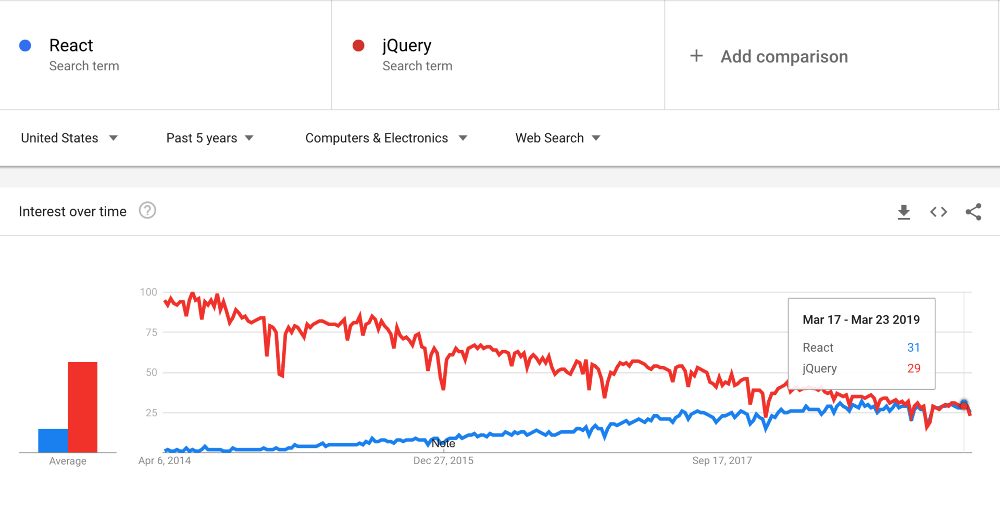

- 00 开篇词 你为什么应该学好软件工程？.md.html
- 01 到底应该怎样理解软件工程？.md.html
- 02 工程思维：把每件事都当作一个项目来推进.md.html
- 03 瀑布模型：像工厂流水线一样把软件开发分层化.md.html
- 04 瀑布模型之外，还有哪些开发模型？.md.html
- 05 敏捷开发到底是想解决什么问题？.md.html
- 06 大厂都在用哪些敏捷方法？（上）.md.html
- 07 大厂都在用哪些敏捷方法？（下）.md.html
- 08 怎样平衡软件质量与时间成本范围的关系？.md.html
- 09 为什么软件工程项目普遍不重视可行性分析？.md.html
- 10 如果你想技术转管理，先来试试管好一个项目.md.html
- 11 项目计划：代码未动，计划先行.md.html
- 12 流程和规范：红绿灯不是约束，而是用来提高效率.md.html
- 13 白天开会，加班写代码的节奏怎么破？.md.html
- 14 项目管理工具：一切管理问题，都应思考能否通过工具解决.md.html
- 15 风险管理：不能盲目乐观，凡事都应该有B计划.md.html
- 16 怎样才能写好项目文档？.md.html
- 17 需求分析到底要分析什么？怎么分析？.md.html
- 18 原型设计：如何用最小的代价完成产品特性？.md.html
- 19 作为程序员，你应该有产品意识.md.html
- 20 如何应对让人头疼的需求变更问题？.md.html
- 21 架构设计：普通程序员也能实现复杂系统？.md.html
- 22 如何为项目做好技术选型？.md.html
- 23 架构师：不想当架构师的程序员不是好程序员.md.html
- 24 技术债务：是继续修修补补凑合着用，还是推翻重来？.md.html
- 25 有哪些方法可以提高开发效率？.md.html
- 26 持续交付：如何做到随时发布新版本到生产环境？.md.html
- 27 软件工程师的核心竞争力是什么？（上）.md.html
- 28 软件工程师的核心竞争力是什么？（下）.md.html
- 29 自动化测试：如何把Bug杀死在摇篮里？.md.html
- 30 用好源代码管理工具，让你的协作更高效.md.html
- 31 软件测试要为产品质量负责吗？.md.html
- 32 软件测试：什么样的公司需要专职测试？.md.html
- 33 测试工具：为什么不应该通过QQ微信邮件报Bug？.md.html
- 34 账号密码泄露成灾，应该怎样预防？.md.html
- 35 版本发布：软件上线只是新的开始.md.html
- 36 DevOps工程师到底要做什么事情？.md.html
- 37 遇到线上故障，你和高手的差距在哪里？.md.html
- 38 日志管理：如何借助工具快速发现和定位产品问题 ？.md.html
- 39 项目总结：做好项目复盘，把经验变成能力.md.html
- 40 最佳实践：小团队如何应用软件工程？.md.html
- 41 为什么程序员的业余项目大多都死了？.md.html
- 42 反面案例：盘点那些失败的软件项目.md.html
- 43 以VS Code为例，看大型开源项目是如何应用软件工程的？.md.html
- 44 微软、谷歌、阿里巴巴等大厂是怎样应用软件工程的？.md.html
- 45 从软件工程的角度看微服务、云计算、人工智能这些新技术.md.html
- 一问一答第1期 30个软件开发常见问题解决策略.md.html
- 一问一答第2期 30个软件开发常见问题解决策略.md.html
- 一问一答第3期 18个软件开发常见问题解决策略.md.html
- 一问一答第4期 14个软件开发常见问题解决策略.md.html
- 一问一答第5期 22个软件开发常见问题解决策略.md.html
- 学习攻略 怎样学好软件工程？.md.html
- 特别放送 从软件工程的角度解读任正非的新年公开信.md.html
- 结束语 万事皆项目，软件工程无处不在.md.html
19 作为程序员，你应该有产品意识
你好，我是宝玉，我今天分享的主题是：作为程序员，你应该有产品意识。
最近电视剧《都挺好》热播，没想到其中一段台词却引发了很多程序员的集体焦虑。台词说的是：“作为一个程序员，你的年龄已经很大了！我问你，你学新东西有年轻人快吗？”
是呀，年纪越来越大，而新技术却层出不穷，是难免会焦虑。但如果你真的每个新的热点技术都去跟，都去学，就可以不焦虑了吗？我看也未必，因为新技术一直会有，学习也都是有成本的，只要你不能一直跟上新技术的步伐，你就会一直焦虑。
那焦虑是怎么产生的呢？
在我看来，焦虑通常来源于压力，压力来源于对未来的不确定，对未来的不确定来源于不知道自己的价值在哪里，不知道未来是不是还能持续创造价值，会不会失业。
会不会失业，取决于你创造的价值是否高于你的工资水平，否则确实是有失业的风险。所以要想不焦虑，我们就要考虑如何提升自身价值，只要自己创造的价值够大，就不担心自己会失业，减少很多不必要的焦虑。
程序员的价值
虽然通常来说，技术水平越高，工资越高，但并不都是这样。你的工资，通常是和你创造的价值正相关的。而程序员的价值通常体现在两个方面。
第一，你的价值体现在你所做的产品之上。
也就是说，你所做的产品越有价值，你的价值就越大，相应的工资也就会高。
这也解释了为什么同一个公司内，负责热门产品的部门，奖金都能多分一点；在效益好的公司，不但不担心裁员，反而钱也拿的多。这些年程序员的待遇相对于其他行业要高，也主要是因为软件和互联网行业的产品估值高。
所以说，程序员的价值，并不完全是体现在技术上的，而在于用技术做成了产品，产品创造了价值，再回过头来成就了程序员的价值。
第二，你的价值体现在团队中的稀缺性。
很多时候程序员其实没机会去选择产品的。但即使在同一个产品中，技术水平相当的程序员，价值也有差别。那些价值高的程序员通常在技术上或者技术之外都有一技之长：
有的程序员能搞定别人搞不定的技术难题；
-
有的程序员擅长培训新人；
-
有的程序员擅长和业务部门沟通；
-
有的程序员能高质量地完成功能模块；
-
有的程序员能按照需求设计好的架构，可以让团队高效率低成本地完成需求。
这些有一技之长的程序员，能帮助团队创造更高的价值，也因为其独特性，难以被取代，具有稀缺性，所以价值也更大。
那怎样来提升价值呢？努力提升自己技术水平，让自己成为技术大牛，这肯定是每个程序员都坚持在做的事。但技术水平提升到一定程度后，会有瓶颈的，进展会非常缓慢。
这时如果也在其他领域同步发展，就会起到事半功倍的效果。比如说有的程序员会发展写作能力，写很多好的技术文章，在业界具有影响力；有的培养产品意识，让自己在技术之外，还能更好理解产品需求，能很好地和产品经理沟通，根据业务需求做出好的设计，写出高质量代码，帮助团队在项目过程上做的更好。
写作固然是提升个人价值很好的方式，但要在写作上有成就，需要建立在长时间不断练习的基础上。而产品意识，是程序员的固有思维中比较欠缺、正好可以互补的，相对比较容易掌握，也能取得明显的效果。
什么是产品意识
产品意识，本质就是一种思维方式，一种站在产品角度思考问题的方式。如果细分一下，产品意识包含：商业意识、用户意识和数据意识。
商业意识
所谓商业意识，就是所做的产品是要有商业价值的。比如说成功的商业产品有 Windows、iPhone、Google 等，这些产品不仅满足用户需求，同时也能创造商业价值，让这些公司变成成功的商业公司，雇用了大批优秀的程序员，从而可以继续研究更多产生商业价值的产品。
其实很多程序员也有做产品的梦想，而且也有人付诸行动，业余时间做了不少产品，但是鲜有成功的。其中一个根本的原因就是，他们做的产品其实没有什么商业价值。
比如说程序员热衷于做个 Github 客户端、博客系统，虽然说确实有用，但是却没什么商业价值，没有用户愿意付钱，导致难以持续。
商业意识的另一方面其实是成本，成本意识也是程序员容易忽视的。比如说：
-
有时候为了炫技，采用了更难更酷的技术方案，而忽视了所采用的方案会导致很高的开发成本；
-
花了太长时间去开会而忽略了开会的成本；
-
有时候又为了省钱，舍不得买一些成熟的商业组件或服务，反而是浪费了更多成本。
如果程序员有商业意识，就可以在项目中有更好的成本意识，为项目节约时间、经济等成本，帮助团队打造更有价值的产品。
用户意识
所谓用户意识，就是说做产品时，你要能挖掘出用户的真实需求，让产品有好的用户体验。这需要你要有同理心，能站在用户的角度去思考和体验产品。
大部分程序员可能更多专注于程序上，所以在用户意识上确实有所欠缺。举例来说：
-
一个产品功能，产品经理在细节上没有定义清楚，程序员可能并不会主动提出，最终做出来的产品会不好用；
-
在做技术方案时，更追求技术炫酷，而不是用户体验更好；
-
在设计接口时，并没有考虑调用者的便利性。
如果程序员能跳出纯技术的局限，多一点用户意识，想到的问题将会多了很多维度，比如说：
-
能让自己的负责的模块有更好的体验；
-
让自己的技术方案更好地满足用户需求，用户更满意；
-
让自己设计的接口、API 更好用，与同事愉快合作。
做到这样，无论对产品还是对自身，都是价值的提升。
数据意识
所谓数据意识，就是在产品设计、产品运营时，通过数据来发现问题、证实结果。
典型的有 A/B 测试，通过数据来发现用户更喜欢哪个功能，哪个功能带来更多的收入。像微博的“时间乱序”功能，虽然很多大 v 吐槽，但是数据证明了这是一个好的产品设计，最终还是一样上线。上线后新浪根据数据不断优化，到现在反倒是很多人喜欢这个功能。
程序员虽然逻辑很好，但是大多对数据倒是不敏感，对编译警告、测试覆盖率、程序 Crash 的比例、API 错误率、一个函数内上千行代码、性能指标等等这些数据经常选择性忽略。
还有个典型的例子就是语言框架之争，程序员经常为某些语言或者框架争论不休，其实不妨基于数据分析，讨论上会更加客观。比如，从数据里你就可以明显看到 jQuery 和 React 近些年在前端的发展趋势。

其实产品意识，并不难理解，只是需要你往前更迈一步，在商业意识、用户意识和数据意识上去多思考，就可以帮你在项目中做的更好。
如何培养产品意识？
那么程序员要怎样培养产品意识呢？要培养产品意识，其实和程序员转管理的类似，首先要解放思想，然后要改变习惯，最后要多实践。这么说可能比较抽象，我们逐条展开来看。
首先要解放思想
解放思想，其实就是说，对于程序员，不要总是单纯的用技术眼光看问题，也可以从产品的角度看问题。这两者有什么区别呢？
举个例子，办公聊天软件 Slack 可能很多人都知道，是一款在线沟通协作软件。在国内可能知名度要低一些，但是在海外有大量企业用户，非常的火。
这款软件在刚出来的时候我就知道，不过那时候我觉得这不就是一个聊天室么，我都能写一个！我站在技术角度也做了不少分析：
- 这个软件前端还是用的 jQuery，如果用 React 应该可以做的更好；
- 这个软件跨平台是基于 HTML5，如果是原生代码也许性能可以更好；
- 还是 REST API，如果用 GraphQL 那 API 请求效率会更好；
- 从国内访问的话，速度太慢了，应该架设一些国内的服务器或者 CDN。
而现在，我会同时也从产品角度分析 Slack：
- 它的商业价值，在于它把工作的沟通，变得高效又好玩；
- 消息都在云端，检索也方便，也不担心像微信一样换设备消息就没了；
- 其开放 API 的设计，让它和很多其他办公软件可以无缝集成，极大提升了效率；
- Slack 需要付费才能查看到 10000 条之前的消息，这是个很有意思的设计，当你已经有 10000 条消息时，说明已经有足够的意愿去付费了。
其实这两个角度也代表了两种不同的思维方式，一种是很多程序员熟悉的技术思维，一种是产品思维。
技术思维会关注用什么技术，关注技术细节，关注功能“如何”实现；产品思维会关注用户体验，关注一个功能所创造的价值，会去思考为什么要或者不要一个功能。
这两种思维不同，也很容易导致沟通上的误解。比如程序员会更多考虑技术实现，产品经理会更多考虑产品设计。如果都能往前迈一步，程序员有产品意识、产品思维，产品经理能有一点技术思维、工程思维，那么相互沟通起来就会更通畅。
这两种思维之间的差别，其实也正是要培养产品意识的关键点。要想培养产品意识，就是要从纯粹的技术思维，有意识地培养产品思维。从关注技术、技术细节，到关注用户体验，关注产品创造的价值。
然后要改变习惯
改变习惯是是指在日常使用产品、开发产品的时候，多站在产品的角度思考，去思考它的商业价值、用户体验、使用场景等等。
比如你学习专栏用的极客时间 App，你聊天用的微信。使用一些具体功能时，可以思考一下这些问题：
-
这个产品的商业价值是什么？
-
为什么要有这个功能？是为了满足用户哪方面需求的？
-
这个产品目标用户是谁？
-
这个功能的使用场景是什么？
-
这个功能的体验好不好？有没有更好的方式提升体验？
也许你没法马上有清楚的答案，但寻找答案的过程也是一个很好的学习的过程。
如果你是程序员，在开发功能、设计架构的时候，也不妨跳出技术之外，从产品角度思考一下：
-
这个功能的需求是什么？我是否完全理解了需求？
-
如果你是这个功能的用户，你觉得还有哪些地方值得改进？
-
哪些技术可以帮助提升用户体验？
-
这个 API 用起来是不是好用？有没有更好的设计？
-
除了对产品的思考，日常工作中，遇到一些问题，也可以从产品思维的角度去想想。
一个常见的场景就是，产品经理一下子提交了一堆新的需求任务，影响了正常的开发进度，这时候你不一定要拒绝他，你就可以和他一起把需求的优先级梳理一下。你就知道哪些要优先做，哪些其实没有那么着急，方便更好的安排你的工作。
还有像产品经理提交了一个技术很复杂的需求，你可以不用着急马上拒绝或者说要很长时间，而是跟他探讨一下这个需求背后要解决什么问题，是不是可以有替代的解决方案，既能降低技术难度又可以满足需求。
自己开发的功能模块完成后，可以把自己当成用户试试，如果觉得体验不好或者有更好的建议，都可以反馈给产品经理。
最后要多实践
光有理论还不够的，最好能自己实践一下。
你不妨在业余时间做个小应用程序，或者设计一个原型，做完了再找你的朋友试用一下，让他们提提意见。在做产品的过程中，你自然会去站在产品的角度去思考，这会让你对产品方面有更多感悟。
其实不用担心没有什么好的想法，可以从日常生活中，自己的需求、家人和朋友的需求中，去找到合适的产品需求。我当初做过很多产品都是这样的来的：
-
给孩子照的照片太多，写了个工具批量生成缩略图；
-
老婆工作上需要经常对网页截取整张图片，设计一个帮助截图的工具；
-
帮父亲建了个家谱应用；
-
给校友们建了一个网上交流的论坛，写过一个论坛系统。
用心观察，类似的需求你也可以找到很多。
总结
今天，我们一起分析了程序员的价值体现，主要体现在两方面：所创造产品的价值和自身的稀缺性。程序员有产品的意识，可以帮助产品和自身提升价值。
产品意识，主要包括商业意识、用户意识和数据意识。要提升产品意识，首先要解放思想，然后要改变习惯，最后要多实践。
当你慢慢培养了产品意识，不仅可以通过技术来打造更高价值的产品，也可以让你在技术之外有一技之长，能在项目中创造更大价值，减少技术快速革新带来的焦虑感。